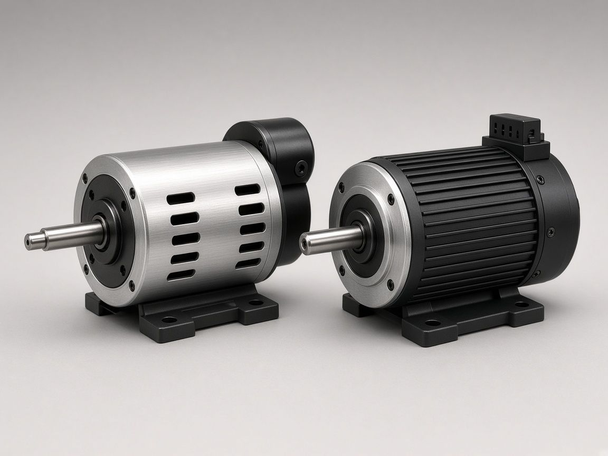
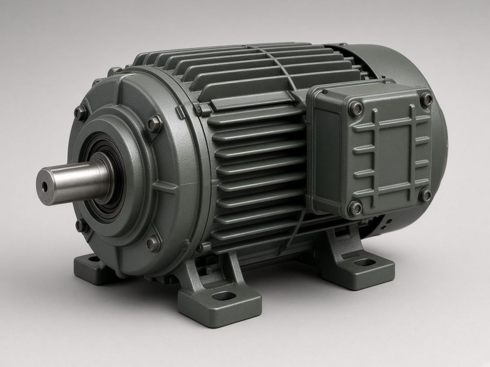

一站式電機解決方案
About YiEng
不只是提供產品，
更協助您解決實務問題
YiEng Electric Co., Ltd.（義英電機有限公司）專注於工業用馬達及相關電機產品的進出口與整合服務。
馬達是設備的動力核心，選對規格才能兼顧效能、壽命與成本。我們以「專業、誠信、效率」為核心理念，協助客戶釐清「怎麼選、怎麼用、怎麼長期穩定運轉」，在製造、自動化與各類設備應用中，找到最合適的動力方案。
專業熟悉馬達規格與應用，提供精準選型建議
誠信以透明、負責的態度經營每段合作
效率精實的組織，帶來快速而專業的回應
Products
產品類別
涵蓋各類工業用馬達與動力系統產品，依您的應用需求提供選型建議與採購服務。


Servo & Stepper Motors
伺服馬達／步進馬達
針對需要精準定位、速度與轉矩控制的自動化應用，提供伺服與步進馬達的選型與採購協助，並可協助確認馬達與驅動器、編碼器、減速機之間的搭配。
了解更多

Explosion-proof & Special Purpose
防爆／特殊用途馬達
針對易燃易爆環境、高溫、多粉塵、高濕或戶外等特殊工況，協助確認現場條件與規格需求，媒合適用之特殊用途馬達，並依專案需求進行客製化規格整合。
了解更多
Drives & Power Systems
變頻器與動力系統產品
除馬達本體外，亦提供相關電機與動力系統產品之貿易服務，包括變頻器、伺服驅動器及傳動配件，協助客戶整合完整的驅動方案，提升設備效率與控制彈性。
了解更多Services
營業項目
從產品採購到應用整合，提供完整的工業馬達服務。
工業用馬達進出口
各類工業用馬達進出口，涵蓋 AC／DC 及特殊應用馬達，協助處理採購、進口與文件作業。
品牌採購與代理協助
協助國內外馬達品牌之採購與代理對接，連結國際供應鏈，提供更多元的產品選擇。
規格選型與應用諮詢
依據設備條件與使用情境，提供功率、轉速、轉矩與安裝方式等規格選型建議。
客製化需求整合
針對特殊電壓、尺寸、環境或安裝需求，整合並對接客製化馬達規格。
電機與動力系統貿易
提供變頻器、驅動器與傳動配件等相關電機與動力系統產品之貿易服務。
售後與替換支援
協助使用諮詢、既有設備馬達替換比對，以及後續補貨與維護需求。
Industries
應用產業
為製造、自動化與各類設備應用，提供合適的動力方案。


Process
服務流程
從需求釐清到售後支援，每個環節都有清楚的溝通與追蹤。
需求諮詢
了解設備用途、負載型態與現場條件，釐清您的實際需求。
選型評估
依據功率、轉速、轉矩、電源與安裝方式等條件進行規格評估。
報價
依確認之規格提供報價，並說明交期、付款與交貨條件。
採購／進口
對接國內外供應來源，安排採購、進口與相關文件作業。
交貨
依約定安排交貨，並協助確認到貨品項、規格與數量。
售後支援
提供使用與安裝相關諮詢，協助後續維護、更換與補貨需求。
Why YiEng
為什麼選擇義英電機
我們重視的不只是交易，而是設備能否長期穩定運轉。
01
連結國際供應鏈
串聯國內外馬達品牌與貨源，為客戶提供更多元、更具彈性的選擇。
02
精準選型建議
從實際應用出發判斷「怎麼選」，避免規格錯配造成的效能損失與浪費。
03
重視長期穩定
關注「怎麼用、怎麼長期穩定運轉」，提供後續使用與維護上的支援。
04
快速專業回應
精實而高效率的組織架構，讓每一個詢問都能獲得即時且專業的回覆。
規格逐項確認下單前與客戶逐項確認規格、數量與交貨條件。
來源透明清楚說明產品來源與相關資訊，資訊公開透明。
出貨前核對出貨前核對品項與規格，降低錯誤與延誤風險。
持續溝通採購過程主動回報進度，交貨後持續提供支援。
FAQ
常見問題
如何選擇合適的馬達規格？
選型時通常需確認負載型態（定轉矩或變轉矩）、所需功率與轉速、電源電壓與頻率、安裝方式與尺寸，以及運轉環境（溫度、濕度、粉塵等）。若您不確定這些資訊，只要提供設備用途與現有馬達的銘牌照片，我們即可協助評估。
交期大約需要多久？
交期依產品規格、數量與供應來源而定，標準品與客製品差異較大。我們會在報價時一併說明預估交期，並在採購過程中持續追蹤進度。
詢價時需要提供哪些資訊？
建議提供：產品類別、功率／轉速／電壓等規格、數量、使用設備與環境、期望交期。資訊越完整，報價與建議越精準。也可以直接到「聯絡我們」頁面填寫詢價表單。